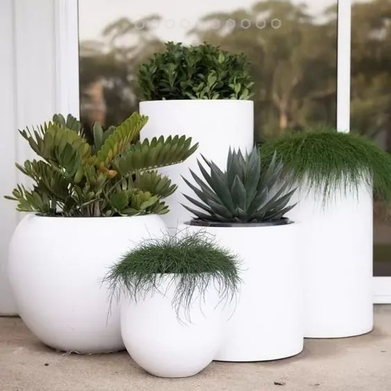
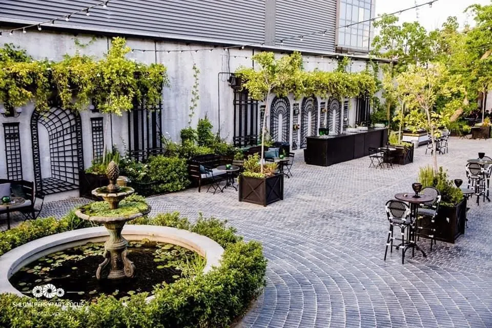
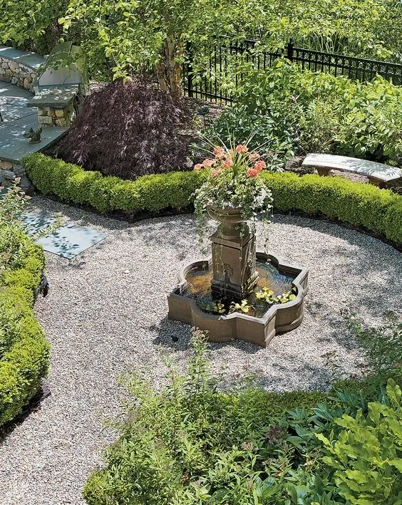

לתמונה הזו יש סיפור
לקוח חכם ניגש לאזור האאוטלט ובחר ארבעה עציצים מחומרים, צורות וצבעים שונים. בבית הוא צבע את כולם, ושלח לנו את התוצאה.
אבן יהודה · מאז 1983
עציצים, אדניות, כדים, מזרקות ופסלים ישירות מהיבואן. מציבים כל מוצר על מרפסת לפני שקונים, ובאים לבחור ב־3,500 מ״ר של תצוגה.
וידאו: הנפשה ב־AI של תמונה מאתר וילה טוסקנה
התמונות מהחנות האונליין של וילה טוסקנה. החיצים או החלקה הצידה מציגים עוד.
המחירים לפני מע״מ, באיסוף עצמי מהמחסן באבן יהודה. שלם וקח.
ממזרקת קיר שתולים כמו תמונה, ועד מזרקה מונומנטלית שמחכה במחסן. עם ליווי של הנדסאית נוף ויועצת פנג שואי לפי הצורך.
וידאו: הנפשה ב־AI של צילום מזרקה מאתר וילה טוסקנה
מהפרויקט האחרון: מלון לאונרדו ארט בכיכר אתרים בתל אביב. סיפקנו 65 מעמדים וכדים, והמעצב צבע את הכדים, שהיו במקור באפור בטון, בצבע שמאפיין את הקונספט של המלון.





במהלך השנים אספנו פריטים מיוחדים, ועכשיו הגיע הזמן לפנות את המדפים. במרכז ה־OUTLET תמצאו עודפים ופריטים מהתצוגה במחירים מפתיעים.

לקוח חכם ניגש לאזור האאוטלט ובחר ארבעה עציצים מחומרים, צורות וצבעים שונים. בבית הוא צבע את כולם, ושלח לנו את התוצאה.

״שירות ואמינות מעל הכל, זה שם המשחק.״
סבא איציק, מייסד וילה טוסקנה
מאז 1983 אנחנו מייבאים פריטי אופנה לגינה ויודעים להתחבר ליצרנים ולאומנים המיוחדים ביותר. היום הדור השלישי כבר בעסק: עומרי, הנכד הבכור, הצטרף ראשון, ואחריו יגיעו עוד חמישה נכדים ונכדה.
״הגנן שלי התרשם מאוד מאוד מאיכות האדניות. וגם משירות מעולה.״
3,500 מ״ר במרכז אבן יהודה, מול הדואר. הביקור בתיאום טלפוני מראש.
רחוב בני בנימין 15, אבן יהודה
מרכז אבן יהודה, מול הדואר